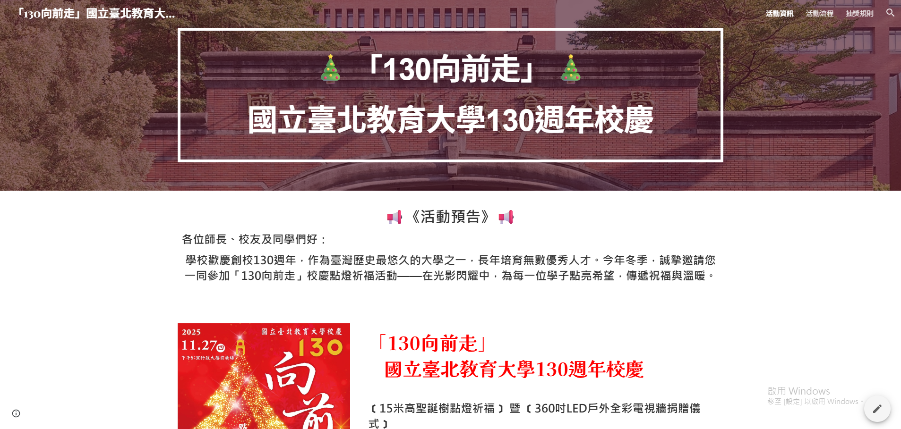
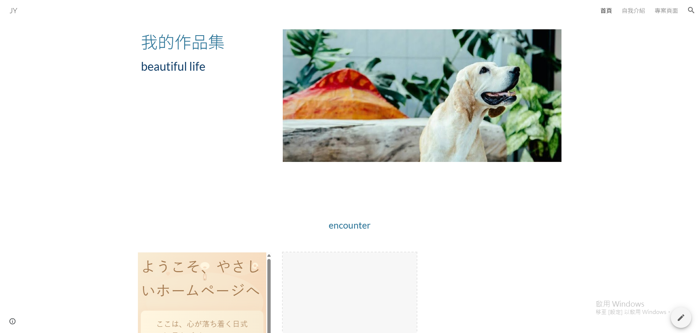

<!--Nav-->
<nav class="site-nav">
  <div class="nav-inner">
    <div class="logo-wrap">
      
    </div>
    <div class="nav-center">
      <span class="tagline">Live in technology</span>
    </div>
    <div class="nav-right">
      <span class="signature">高佳愉</span>
    </div>
  </div>
</nav>

<style>
@import url('https://fonts.googleapis.com/css2?family=Pacifico&family=Dancing+Script:wght@700&display=swap');
.site-nav{
  background: linear-gradient(90deg,#e6fbf6,#d9f3ec);
  padding: 12px 20px;
  border-bottom: 1px solid rgba(13,103,102,0.06);
}
.nav-inner{
  max-width:1000px;
  margin:0 auto;
  display:flex;
  align-items:center;
  justify-content:flex-start;
  gap:16px;
}
.logo{width:70px;height:70px;object-fit:cover;border-radius:8px;box-shadow:0 4px 12px rgba(0,0,0,0.06);}
.tagline{color:#2e8b87;font-weight:600;font-size:2rem;letter-spacing:0.4px;text-align:left;}
.signature{font-family:'Dancing Script', 'Pacifico', cursive;color:#0d6766;font-size:1.2rem;text-align:left;letter-spacing:1.5px;}
.nav-center, .nav-right {text-align:left;}
@media (max-width:600px){
  .nav-inner{padding:0 8px}
  .tagline{display:none}
}
</style>

<!--Banner-->
<section class="hero-carousel" aria-label="主橫幅：三頁自動翻轉">
  <div class="carousel-inner">
    <a class="slide active" href="https://jy1027.github.io/oldfinalwebsite" target="_blank" aria-label="橫幅：作品 1">
      <div class="slide-preview"><iframe src="https://jy1027.github.io/oldfinalwebsite" title="作品 1 預覽"></iframe></div>
      <div class="slide-caption">作品 1：晨光</div>
    </a>

    <a class="slide" href="https://jy1027.github.io/1007" target="_blank" aria-label="橫幅：作品 4">
      <div class="slide-preview"><iframe src="https://jy1027.github.io/1007" title="作品 4 預覽"></iframe></div>
      <div class="slide-caption">作品 4：小巷咖啡</div>
    </a>

    <a class="slide" href="https://sites.google.com/stu.ntue.edu.tw/20251125/%E6%B4%BB%E5%8B%95%E8%B3%87%E8%A8%8A" target="_blank" aria-label="橫幅：作品 10">
      <div class="slide-preview">
        <!-- 使用 img 顯示完整的 m1 圖片 -->
        
      </div>
      <div class="slide-caption">作品 10：日常插畫</div>
    </a>
  </div>

  <div class="carousel-indicators" role="tablist" aria-hidden="true">
    <button class="indicator active" data-index="0" aria-label="切換到第1頁"></button>
    <button class="indicator" data-index="1" aria-label="切換到第2頁"></button>
    <button class="indicator" data-index="2" aria-label="切換到第3頁"></button>
  </div>
</section>

<style>
/* Banner: 文青風自動輪播 */
@import url('https://fonts.googleapis.com/css2?family=Playfair+Display:wght@400;700&display=swap');

.hero-carousel{max-width:1000px;margin:18px auto;padding:0 20px;}
.carousel-inner{position:relative;height:320px;border-radius:12px;overflow:hidden;background:linear-gradient(180deg,#fffdf9,#f7fbf8);box-shadow:0 8px 26px rgba(15,36,33,0.06);border:1px solid rgba(13,103,102,0.05);}
.slide{position:absolute;inset:0;display:flex;flex-direction:column;align-items:flex-start;justify-content:flex-end;padding:18px;gap:12px;text-decoration:none;color:inherit;opacity:0;transform:scale(1.01);transition:opacity .6s ease, transform .6s ease;pointer-events:none;}
.slide.active{opacity:1;transform:scale(1);pointer-events:auto;}
.slide-preview{position:absolute;inset:0;border-radius:12px;overflow:hidden;background:#f6f6f3;}
.slide-preview iframe{width:100%;height:100%;border:0;pointer-events:none;filter:grayscale(.03) contrast(.98);transform:scale(.99);}

/* new: ensure banner images show the whole image and don't capture clicks */
.slide-preview img{
  width:100%;
  height:100%;
  object-fit:contain;
  display:block;
  border:0;
  pointer-events:none;
  background-color:transparent;
}
/* caption style */
.slide-caption{position:relative;background:rgba(255,255,255,0.82);padding:10px 12px;border-radius:8px;font-family:"Playfair Display",serif;color:#123b39;box-shadow:0 6px 16px rgba(9,41,39,0.06);}
/* indicators */
.carousel-indicators{display:flex;gap:8px;justify-content:center;margin-top:10px}
.indicator{width:10px;height:10px;border-radius:50%;background:rgba(10,60,58,0.12);border:0;cursor:pointer}
.indicator.active{background:rgba(10,60,58,0.8)}
/* responsive */
@media (max-width:880px){ .carousel-inner{height:240px;} .slide-caption{font-size:0.95rem;} }
@media (max-width:520px){ .carousel-inner{height:160px;} .slide-caption{font-size:0.9rem;padding:8px;} }

/* respect reduced motion */
@media (prefers-reduced-motion: reduce){ .slide{transition:none} }
</style>

<script>
(function(){
  let slides = [], indicators = [], idx = 0, timer = null;
  function show(i){
    slides.forEach((s,j)=>{ s.classList.toggle('active', j===i); s.setAttribute('aria-hidden', j===i ? 'false' : 'true'); });
    indicators.forEach((b,j)=>b.classList.toggle('active', j===i));
    idx = i;
  }
  function next(){ show((idx + 1) % slides.length); }
  function start(){
    if(window.matchMedia('(prefers-reduced-motion: reduce)').matches) return;
    stop();
    timer = setInterval(next, 2500);
  }
  function stop(){ if(timer){ clearInterval(timer); timer = null; } }

  document.addEventListener('DOMContentLoaded', function(){
    slides = Array.from(document.querySelectorAll('.hero-carousel .slide'));
    indicators = Array.from(document.querySelectorAll('.hero-carousel .indicator'));
    indicators.forEach(btn => btn.addEventListener('click', ()=> show(Number(btn.dataset.index))));
    show(0);
    start();
    const root = document.querySelector('.hero-carousel');
    if(root){
      root.addEventListener('mouseenter', stop);
      root.addEventListener('mouseleave', start);
      root.addEventListener('focusin', stop);
      root.addEventListener('focusout', start);
    }
  });
})();
</script>

<!--Main-->
<main class="site-main">
  <section class="zone zone-1" aria-label="第一區塊">
    <div class="cards">
      <a class="card" href="https://jy1027.github.io/oldfinalwebsite" target="_blank" aria-label="作品 1：晨光">
        <div class="card-preview"><iframe src="https://jy1027.github.io/oldfinalwebsite" loading="lazy" title="作品 1 預覽"></iframe></div>
        <div class="card-caption">作品 1：晨光</div>
      </a>
      <a class="card" href="https://sites.google.com/view/jylife20061027/%E9%A6%96%E9%A0%81" target="_blank" aria-label="作品 2：午後書店">
        <div class="card-preview">
          <!-- 使用 img 顯示完整的 m2 圖片 -->
          
        </div>
        <div class="card-caption">作品 2：午後書店</div>
      </a>
      <a class="card" href="https://jy1027.github.io/0930" target="_blank" aria-label="作品 3：紙筆記憶">
        <div class="card-preview"><iframe src="https://jy1027.github.io/0930" loading="lazy" title="作品 3 預覽"></iframe></div>
        <div class="card-caption">作品 3：紙筆記憶</div>
      </a>
    </div>
  </section>

  <section class="zone zone-2" aria-label="第二區塊">
    <div class="cards">
      <a class="card" href="https://jy1027.github.io/1007" target="_blank" aria-label="作品 4：小巷咖啡">
        <div class="card-preview"><iframe src="https://jy1027.github.io/1007" loading="lazy" title="作品 4 預覽"></iframe></div>
        <div class="card-caption">作品 4：小巷咖啡</div>
      </a>
      <a class="card" href="https://jy1027.github.io/1014/ex1.html" target="_blank" aria-label="作品 5：風琴窗">
        <div class="card-preview"><iframe src="https://jy1027.github.io/1014/ex1.html" loading="lazy" title="作品 5 預覽"></iframe></div>
        <div class="card-caption">作品 5：風琴窗</div>
      </a>
      <a class="card" href="https://jy1027.github.io/1014/ex1014.html" target="_blank" aria-label="作品 6：散步地圖">
        <div class="card-preview"><iframe src="https://jy1027.github.io/1014/ex1014.html" loading="lazy" title="作品 6 預覽"></iframe></div>
        <div class="card-caption">作品 6：散步地圖</div>
      </a>
    </div>
  </section>

  <section class="zone zone-3" aria-label="第三區塊">
    <div class="cards">
      <a class="card" href="https://jy1027.github.io/1014/namecard.html" target="_blank" aria-label="作品 7：手作筆記">
        <div class="card-preview"><iframe src="https://jy1027.github.io/1014/namecard.html" loading="lazy" title="作品 7 預覽"></iframe></div>
        <div class="card-caption">作品 7：手作筆記</div>
      </a>
      <a class="card" href="https://jy1027.github.io/1118" target="_blank" aria-label="作品 8：紙膠帶收藏">
        <div class="card-preview"><iframe src="https://jy1027.github.io/1118" loading="lazy" title="作品 8 預覽"></iframe></div>
        <div class="card-caption">作品 8：紙膠帶收藏</div>
      </a>
      <a class="card" href="https://sites.google.com/stu.ntue.edu.tw/20251125/%E6%B4%BB%E5%8B%95%E8%B3%87%E8%A8%8A" target="_blank" aria-label="作品 9：城市詩稿">
        <div class="card-preview">
          <!-- 使用 img 顯示完整的 m1 圖片 -->
          
        </div>
        <div class="card-caption">作品 9：城市詩稿</div>
      </a>
    </div>
  </section>

  <section class="zone zone-4" aria-label="第四區塊">
    <div class="cards two-cols">
      <a class="card" href="https://jy1027.github.io/oldindex.html" target="_blank" aria-label="作品 10：日常插畫">
        <div class="card-preview"><iframe src="https://jy1027.github.io/oldindex.html" loading="lazy" title="作品 10 預覽"></iframe></div>
        <div class="card-caption">作品 10：日常插畫</div>
      </a>
      <a class="card" href="https://jy1027.github.io/ooldindex.html" target="_blank" aria-label="作品 11：紙語錄">
        <div class="card-preview"><iframe src="https://jy1027.github.io/oold.index.html" loading="lazy" title="作品 11 預覽"></iframe></div>
        <div class="card-caption">作品 11：紙語錄</div>
      </a>
    </div>
  </section>
</main>

<style>
/* Main: 文青風卡片區 */
@import url('https://fonts.googleapis.com/css2?family=Playfair+Display:wght@400;700&display=swap');

.site-main{
  max-width:1000px;
  margin:28px auto;
  padding:0 20px;
  display:flex;
  flex-direction:column;
  gap:22px;
  font-family: "Playfair Display", serif;
  color:#174f4a;
}

.zone{
  background:linear-gradient(180deg, rgba(255,255,250,0.9), rgba(246,250,247,0.9));
  padding:18px;
  border-radius:10px;
  box-shadow:0 6px 18px rgba(17,40,35,0.06);
  border:1px solid rgba(13,103,102,0.06);
}

.cards{
  display:grid;
  grid-template-columns: repeat(3, 1fr);
  gap:14px;
  align-items:start;
}

/* zone-4 has two columns */
.cards.two-cols{grid-template-columns: repeat(2, 1fr);}

.card{
  display:flex;
  flex-direction:column;
  gap:10px;
  text-decoration:none;
  color:inherit;
  background: linear-gradient(180deg, rgba(255,255,255,0.6), rgba(250,250,247,0.6));
  padding:10px;
  border-radius:8px;
  transition: transform .16s ease, box-shadow .16s ease;
  border:1px solid rgba(10,60,58,0.04);
}

.card:hover{ transform: translateY(-6px); box-shadow:0 14px 28px rgba(9,41,39,0.08); }

.card-preview{
  width:100%;
  height:140px;
  overflow:hidden;
  border-radius:6px;
  background:#f6f6f3;
  box-shadow: inset 0 1px 0 rgba(255,255,255,0.6);
}

/* iframe as a live thumbnail; disable pointer events so the anchor catches the click */
.card-preview iframe{
  width:100%;
  height:100%;
  border:0;
  pointer-events:none;
  transform:scale(0.99);
  filter:grayscale(.04) contrast(.98);
}

/* new: ensure images fit entirely inside the preview box */
.card-preview img{
  width:100%;
  height:100%;
  object-fit:contain; /* 顯示整張圖片 */
  display:block;
  border:0;
  pointer-events:none; /* 讓點擊仍然導向外部連結 */
  background-color:transparent;
}

/* caption below the preview */
.card-caption{
  font-size:0.98rem;
  text-align:left;
  color:#123b39;
  letter-spacing:0.2px;
}

/* small screens: stack and reduce sizes */
@media (max-width:880px){
  .cards{grid-template-columns: repeat(2, 1fr);}
  .card-preview{height:120px;}
}
@media (max-width:520px){
  .cards{grid-template-columns: 1fr;}
  .card-preview{height:110px;}
  .site-main{margin:18px auto;}
}
</style>

<!--Footer-->
<footer class="site-footer">
  <div class="footer-inner">
    <div class="footer-left">
      <!-- 可更改的照片檔名：footer-photo.png -->
      
    </div>

    <div class="footer-center">
      <div class="contact">
        <div>學校：國立臺北教育大學</div>
        <div>系級：數位科技設計系一甲</div>
        <div>學號：111419026</div>
        <div>電話：02-6639-6688</div>
        <div>地址：臺北市大安區和平東路二段134號</div>
        <div>信箱：s111419026@stu.ntue.edu.tw</div>
      </div>
    </div>

    <div class="footer-right">
      <a href="https://line.me/" target="_blank" rel="noopener" class="social" aria-label="LINE">
        <svg viewBox="0 0 24 24" xmlns="https://share.google/u7NbOXiusyX1NJDg6" aria-hidden="true">
          <path d="M4 3h16v12H7.5L4 18V3z" stroke="currentColor" stroke-width="1.4" stroke-linecap="round" stroke-linejoin="round" fill="none"/>
        </svg>
      </a>

      <a href="https://instagram.com/" target="_blank" rel="noopener" class="social" aria-label="Instagram">
        <svg viewBox="0 0 24 24" xmlns="https://share.google/jPyzd7rBpy06GJqYh" aria-hidden="true">
          <rect x="3" y="3" width="18" height="18" rx="5" stroke="currentColor" stroke-width="1.4" fill="none"/>
          <circle cx="12" cy="12" r="3" stroke="currentColor" stroke-width="1.4" fill="none"/>
          <circle cx="17.5" cy="6.5" r="0.7" fill="currentColor"/>
        </svg>
      </a>

      <a href="https://facebook.com/" target="_blank" rel="noopener" class="social" aria-label="Facebook">
        <svg viewBox="0 0 24 24" xmlns="https://share.google/rmNHh9WKnzWrLPyxF" aria-hidden="true">
          <path d="M15 3h3v4h-3v2h3v4h-3v8h-3v-8h-2v-4h2V7.2C12 5 13 3 15 3z" fill="currentColor"/>
        </svg>
      </a>
    </div>
  </div>
</footer>

<style>
/* Footer: 背景比 Nav 深一點，圖片完整顯示，文字左對齊，社群圖示灰階 */
.site-footer{
  background: linear-gradient(90deg,#d3f6f1,#c0eae3); /* 比 nav 稍深 */
  padding:18px 20px;
  border-top:1px solid rgba(0,0,0,0.06);
}
.footer-inner{
  max-width:1000px;
  margin:0 auto;
  display:flex;
  align-items:center;
  justify-content:space-between;
  gap:24px;
}

/* 左側圖片 */
.footer-left{flex:0 0 auto; width:180px; display:flex; align-items:center; justify-content:center;}
.footer-photo{
  max-width:100%;
  height:80px;
  object-fit:contain; /* 顯示完整圖片 */
  display:block;
  border-radius:6px;
  box-shadow:0 4px 10px rgba(0,0,0,0.06);
  background-color:transparent;
}

/* 中間聯絡資訊：左對齊，垂直置中 */
.footer-center{
  flex:1;
  text-align:left;
  padding-left:28px;
  color:#0d6766;
  font-size:0.95rem;
  display:flex;
  flex-direction:column;
  justify-content:center;
  min-height:80px;
  gap:2px;
}
.contact div{margin:0;}

/* 右側社群圖示 (灰黑白) */
.footer-right{flex:0 0 auto;display:flex;gap:12px;align-items:center;height:80px;}
.social{color:#222; display:inline-flex; align-items:center; justify-content:center;}
.social svg{height:48px; width:48px; filter:grayscale(100%); opacity:0.9; transition:opacity .18s, transform .12s;}
.social:hover svg{opacity:1; transform:translateY(-3px);}

/* 小螢幕：垂直堆疊且縮小尺寸 */
@media (max-width:600px){
  .footer-inner{flex-direction:column;gap:12px; align-items:stretch;}
  .footer-left{width:110px;}
  .footer-photo{height:64px;}
  .footer-center{padding-left:0; min-height:64px; text-align:left;}
  .footer-right{height:64px; justify-content:center;}
  .social svg{height:40px; width:40px;}
}
</style>
